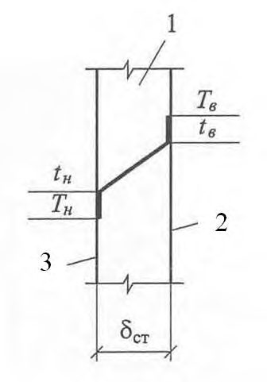
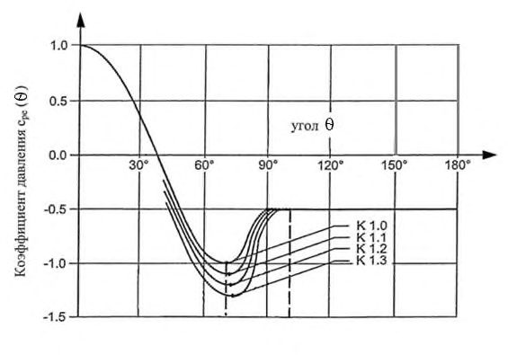
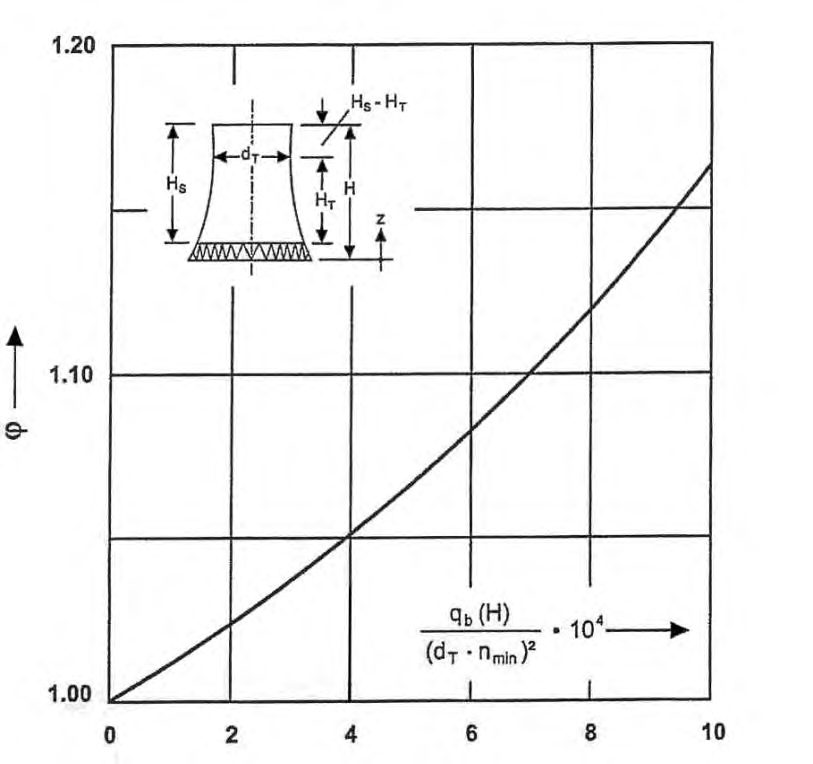
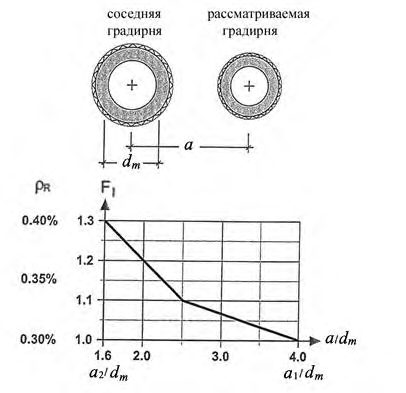
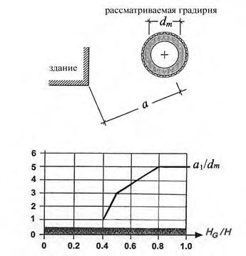

СП 340.1325800.2017 «Конструкции железобетонные и бетонные градирен. Правила про»
О документе: разработчики, утверждение, регистрация, ключевые слова
СВОД ПРАВИЛ СП 340.1325800.2017
1 ИСПОЛНИТЕЛИ - АО «НИЦ «Строительство» - Научно-исследовательский, проектно-конструкторский и технологический институт бетона и железобетона им. А.А. Гвоздева (НИИЖБ им. А.А. Гвоздева)
2 ВНЕСЕН Техническим комитетом по стандартизации ТК 465 «Строительство»
3 ПОДГОТОВЛЕН К УТВЕРЖДЕНИЮ Департаментом градостроительной деятельности и архитектуры Министерства строительства и жилищно-коммунального хозяйства Российской Федерации (Минстрой России)
4 УТВЕРЖДЕН приказом Министерства строительства и жилищно-коммунального хозяйства Российской Федерации (Минстрой России) от 23 октября 2017 г. № 1462/пр и введен в действие с 24 апреля 2018 г.
5 ЗАРЕГИСТРИРОВАН Федеральным агентством по техническому регулированию и метрологии (Росстандарт)
В случае пересмотра (замены) или отмены настоящего свода правил соответствующее уведомление будет опубликовано в установленном порядке. Соответствующая информация, уведомление и тексты размещаются также в информационной системе общего пользования - на официальном сайте разработчика (Минстрой России) в сети Интернет
© Минстрой России, 2017
Настоящий нормативный документ не может быть полностью или частично воспроизведен, тиражирован и распространен в качестве официального издания на территории Российской Федерации без разрешения Минстроя России
Дата введения 2018-04-24
Введение
Настоящий свод правил подготовлен с целью повышения уровня безопасности людей в зданиях и сооружениях и сохранности материальных ценностей в соответствии с Федеральным законом от 30 декабря 2009 г. № 384-ФЗ «Технический регламент о безопасности зданий и сооружений», с учетом требований Федерального закона от 23 ноября 2009 г. № 261-ФЗ «Об энергосбережении и повышении энергетической эффективности и о внесении изменений в отдельные законодательные акты Российской Федерации».
Работа выполнена авторским коллективом АО «НИЦ «Строительство» - НИИЖБ им. А.А. Гвоздева (руководитель работы - канд. техн. наук М.Я. Якобсон , канд. техн. наук Б.С. Соколов , А.С. Введенская , А.А. Кузнецова ), ОАО «СПбАЭП» (канд. техн. наук М.Р. Пресман ).
Reinforced concrete and concrete structures of cooling towers. Design rules
1Область применения
Свод правил устанавливает требования к проектированию железобетонных градирен и распространяется на работы по проектированию испарительных градирен с вытяжными башнями из монолитного железобетона и вентиляторных градирен из сборного и монолитного железобетона, относящихся к классу сооружений КС-2, КС-3 по ГОСТ 27751.
Свод правил не распространяется на проектирование сооружений, предназначенных для строительства в сейсмических районах, в Северной строительно-климатической зоне, в районах распространения просадочных, набухающих и слабых по физико-механическим свойствам грунтов без соблюдения дополнительных требований, предъявляемых к таким сооружениям соответствующими нормативными документами.
2Нормативные ссылки
В настоящем своде правил использованы нормативные ссылки на следующие документы:
ГОСТ 9.045-75 Единая система защиты от коррозии и старения. Покрытия лакокрасочные. Ускоренные методы определения стойкости
ГОСТ 9.050-75 Единая система защиты от коррозии и старения. Покрытия лакокрасочные. Методы лабораторных испытаний на устойчивость к воздействию плесневых грибов
ГОСТ 9.401-91 Единая система защиты от коррозии и старения. Покрытия лакокрасочные. Общие требования и методы ускоренных испытаний на стойкость к воздействию климатических факторов
ГОСТ 9.403-80 Единая система защиты от коррозии и старения. Покрытия лакокрасочные. Методы испытаний на стойкость к статическому воздействию жидкостей ГОСТ 5686-2012 Грунты. Методы полевых испытаний сваями
ГОСТ 19804-2012 Сваи железобетонные заводского изготовления. Общие технические условия
ГОСТ 23120-78 Лестницы маршевые, площадки и ограждения стальные. Технические условия
ГОСТ 24211 Добавки для бетонов и строительных растворов. Общие технические условия
ГОСТ 26633-2015 Бетоны тяжелые и мелкозернистые. Технические условия
ГОСТ 27037-86 Материалы лакокрасочные. Метод определения устойчивости к воздействию переменных температур
ГОСТ 27751-2014 Надежность строительных конструкций и оснований. Общие положения
ГОСТ 28574-2014 Защита от коррозии в строительстве. Конструкции бетонные и железобетонные. Методы испытаний адгезии защитных покрытий
ГОСТ 28575-2014 Защита от коррозии в строительстве. Конструкции бетонные и железобетонные. Испытания паропроницаемости защитных покрытий
\_\_\_\_\_\_\_\_\_\_\_\_\_\_\_\_\_\_\_\_\_\_\_\_\_\_\_\_\_\_\_\_\_\_\_\_\_\_\_\_\_\_\_\_\_\_\_\_\_\_\_\_\_\_\_\_\_\_\_\_\_\_\_\_\_\_\_\_\_\_\_\_\_\_\_\_\_
ГОСТ 31383-2008 Защита бетонных и железобетонных конструкций от коррозии. Методы испытаний
ГОСТ 31384-2008 Защита бетонных и железобетонных конструкций от коррозии. Общие технические требования
ГОСТ 31993-2013 (ИСО 2808:2007) Материалы лакокрасочные. Определение толщины покрытия
ГОСТ 32016-2012 Материалы и системы для защиты и ремонта бетонных конструкций. Общие требования
ГОСТ 32017-2012 Материалы для защиты и ремонта бетонных конструкций. Требования к системам защиты бетона при ремонте
СП 14.13330.2014 «СНиП II-7-81* Строительство в сейсмических районах» (с изменением № 1)
СП 20.13330.2016 «СНиП 2.01.07-85 Нагрузки и воздействия»
СП 22.13330.2016 «СНиП 2.02.01-83 Основания зданий и сооружений»
СП 24.13330.2011 «СНиП 2.02.03-85 Свайные фундаменты» (с изменением № 1)
СП 27.13330.2017 «СНиП 2.03.04-84 Бетонные и железобетонные конструкции, предназначенные для работы в условиях воздействия повышенных и высоких температур»
СП 28.13330.2017 «СНиП 2.03.11-85 Защита строительных конструкций от коррозии»
СП 31.13330.2012 «СНиП 2.04.02-84 Водоснабжение. Наружные сети и сооружения» (с изменениями № 1, № 2)
СП 41.13330.2012 «СНиП 2.06.08-87 Бетонные и железобетонные конструкции гидротехнических сооружений»
СП 47.13330.2016 «СНиП 11-02-96 Инженерные изыскания для строительства. Основные положения»
СП 50.13330.2012 «СНиП 23-02-2003 Тепловая защита зданий»
СП 58.13330.2012 «СНиП 33-01-2003 Гидротехнические сооружения. Основные положения» (с изменением № 1)
СП 63.13330.2012 «СНиП 52-01-2003 Бетонные и железобетонные конструкции. Основные положения» (с изменениями № 1, № 2)
СП 70.13330.2012 «СНиП 3.03.01-87 Несущие и ограждающие конструкции» (с изменением № 1)
СП 131.13330.2012 «СНиП 23-01-99 Строительная климатология» (с изменением № 2)
Примечание - При пользовании настоящим сводом правил целесообразно проверить действие ссылочных документов в информационной системе общего пользования -на официальном сайте федерального органа исполнительной власти в сфере стандартизации в сети Интернет или по ежегодному информационному указателю «Национальные стандарты», который опубликован по состоянию на 1 января текущего года, и по выпускам ежемесячного информационного указателя «Национальные стандарты» за текущий год. Если заменен ссылочный документ, на который дана недатированная ссылка, то рекомендуется использовать действующую версию этого документа с учетом всех внесенных в данную версию изменений. Если заменен ссылочный документ, на который дана датированная ссылка, то рекомендуется использовать версию этого документа с указанным выше годом утверждения (принятия). Если после утверждения настоящего свода правил в ссылочный документ, на который дана датированная ссылка, внесено изменение, затрагивающее положение на которое дана ссылка, то это положение рекомендуется применять без учета данного изменения. Если ссылочный документ отменен без замены, то положение, в котором дана ссылка на него, рекомендуется применять в части, не затрагивающей эту ссылку. Сведения о действии сводов правил целесообразно проверить в Федеральном информационном фонде стандартов.
3Термины и определения
В настоящем своде правил применены следующие термины с соответствующими определениями:
- 3.1башенная градирня
- Вид градирни, в которой требуемое для охлаждения воды количество воздуха обеспечивается естественной тягой, создаваемой за счет высоты вытяжной башни и разности плотностей воздуха, находящегося внутри и снаружи башни градирни; она называется также градирней с естественной тягой.
- 3.2ветровые перегородки
- Вертикальные стенки, расположенные в подоросительном пространстве (между оросителем и водой в бассейне) и служащие для предупреждения сквозного продувания ветром через воздуховходные окна и формирования правильного воздушного потока внутри градирни.
- 3.3вентиляторная градирня
- Вид градирни, через которую воздух прокачивается нагнетательными или отсасывающими вентиляторами.
- 3.4водоохладительное устройство
- Устройство, которое включает в себя несущий каркас, систему водораспределения, оросительное устройство, водоуловительное устройство, ветровые и разделительные перегородки.
- 3.5водораспределительная система
- Система, предназначенная для распределения охлаждаемой воды по поверхности оросителя градирни, состоящая из подводящих трубопроводов или каналов горячей воды, вертикальных стояков (стальные или железобетонные) для подъема воды на отметку водораспределения, магистральных трубопроводов или каналов для подвода воды во все зоны орошения, рабочих трубопроводов, распределяющих воду по всей площади орошения, разбрызгивающих сопел на рабочих трубопроводах. Примечание - В систему водораспределения могут входить трубопроводы зимнего обогрева, лотки и каналы для сбора воды для градирен с поднятой водосборной системой.
- 3.6водосборный бассейн
- Резервуар, предназначенный для сбора охлажденной воды.
- 3.7водоуловитель (каплеуловитель)
- Технологическое оборудование градирни, служащее для уменьшения уноса из градирен.
- 3.8воздуховходное окно
- Открытая нижняя часть градирни, через которую в нее поступает воздух.
- 3.9высота зоны охлаждения
- Степень приближения температуры охлажденной воды к теоретическому пределу охлаждения.
- 3.10гидравлическая нагрузка
- Значение расхода воды, поступающей в градирню.
- 3.11градирня
- Сооружение для охлаждения воды в оборотных и комбинированных системах водоснабжения.
- 3.12зимняя установка
- Технологическое оборудование градирни, применяемое в зимний период, предназначенное для образования в воздуховходном окне градирни завесы, состоящей из свободных потоков теплой воды.
- 3.13зона охлаждения
- Разница между температурой нагретой воды, подаваемой на градирню, и температурой воды, охлажденной в градирне.
- 3.14испарительная градирня
- Градирня, в которой охлаждение воды осуществляется за счет испарения и непосредственного контакта воды с воздухом.
- 3.15капельный унос
- Охлажденная вода, выносимая воздухом в виде капель за выходное сечение градирни.
- 3.16оборотная вода
- Вода, подаваемая в градирню для охлаждения по замкнутому циклу от конденсаторов турбин и других теплообменников вспомогательного оборудования.
- 3.17опорный каркас водоохладительного устройства
- Опорная конструкция оросителя, системы водораспределения и водоуловителя (каплеуловителя).
- 3.18ороситель
- Технологическое оборудование градирни, смонтированное из сетчатых элементов или листов в обтекаемые блоки различной формы, установленное в градирне с целью интенсификации теплообмена между водой и воздухом.
- 3.19подводящие водоводы
- Напорные трубопроводы или каналы, подающие нагретую воду в водораспределительную систему.
- 3.20подпиточная вода
- Вода, введенная в циркуляционную охлаждающую систему с целью покрытия потерь воды, вызванных испарением, уносом, продувкой.
- 3.21продувка
- Выведение из циркуляционной системы потока охлаждающей воды для регулирования концентрации соли или других загрязнений в охлаждающей воде.
- 3.22разбрызгивающее устройство
- устройство, являющееся частью водораспределительной системы, предназначенное для создания капельного потока воды над оросительным устройством.
- 3.23температура охлажденной воды
- Средняя температура воды, вытекающей из бассейна градирни, перед введением добавочной воды.
- 3.24тепловая нагрузка
- Количество тепла, подаваемого в градирню от конденсаторов турбин и других теплообменников вспомогательного оборудования в единицу времени.
- 3.25технологическое оборудование
- Оборудование градирни, обеспечивающее ее функционирование в качестве устройства для охлаждения воды.
- 3.26воздухорегулирующее устройство
- Устройство перед воздуховходными окнами для ограничения поступления в градирню холодного воздуха в зимнее время года.
- 3.27пандус водосборного бассейна
- Конструкция, обеспечивающая доступ техники в водосборный бассейн для монтажа, ремонта и удаления донных отложений.
- 3.28плотность орошения
- Отношение гидравлической нагрузки к площади орошения.
- 3.29площадь орошения
- Площадь поверхности оросителя на его верхней отметке.
- 3.30разделительные перегородки
- Перегородки, разделяющие градирню на независимо отключаемые секции и расположенные по высоте градирни от низа оросительного устройства до водораспределительного устройства, включая высоту факела разбрызгивания разбрызгивающих устройств.
- 3.31расчетные номограммы (кривые охлаждения)
- Графики зависимости температуры охлажденной воды от значений параметров атмосферного воздуха, тепловой и гидравлической нагрузок, подаваемых на градирню.
- 3.32установка непосредственного сброса (байпас)
- Технологическое оборудование градирни, предназначенное для направления всего потока (или его части) охлаждаемой воды непосредственно в водосборный бассейн градирни, минуя водораспределительную систему.
4Основные положения
Градирни следует применять в зонах сейсмического воздействия до 8 баллов по шкале МСК-64 с учетом требований СП 20.13330. В соответствии с СП 58.13330 градирня является гидротехническим сооружением. При разработке проектов градирен следует руководствоваться требованиями СП
- 31.13330 и СП 41.13330.
Проектирование градирен должно производиться в соответствии с СП 63.13330, СП 28.13330, ГОСТ 31384, СП 27.13330, [1] и настоящим сводом правил.
- влажность воздуха внутри градирни достигает 100 %;
- орошение конструкций и оборудования оборотной водой температурой от 10 °С до 60 С;
- значительные внутренние напряжения в зимнее время при замораживании строительных материалов в водонасыщенном состоянии;
- попеременное увлажнение и высушивание строительных конструкций в летнее время;
- агрессивность оборотной воды и воздуха, проходящих через градирню, по отношению к строительным конструкциям, оборудованию и материалам.
- принимать конструктивные схемы, обеспечивающие необходимую прочность, устойчивость и пространственную неизменяемость сооружения в целом, а также отдельных элементов на всех стадиях возведения (изготовления, монтажа) и эксплуатации;
- выбирать материалы конструкций в соответствии с правилами безопасности, утвержденными в установленном порядке;
- соблюдать требования общеплощадочной унификации при выборе строительных изделий и материалов для сооружений, размещаемых на одной площадке;
- увязывать окраску башни градирни с архитектурой окружающей застройки;
- соблюдать требования по охране окружающей среды, принимать меры для уменьшения загрязнения атмосферы выбросами из вытяжных башен.
5Технологическое проектирование
5.1Основные исходные данные для проектирования
Основные эксплуатационные характеристики градирни - расчетные номограммы, полученные в результате технологических расчетов, должны быть приведены в паспорте на градирню.
- тип и число турбин, обслуживаемых градирнями;
- режимы работы турбин (летний, зимний, весенне-осенний периоды эксплуатации);
- расчетный расход пара в конденсаторах турбин;
- расчетный расход циркуляционной воды в конденсаторах турбин;
- расход пара и расход циркуляционной воды в основных режимах работы турбин;
- зависимость давления пара в конденсаторах турбин от температуры охлажденной воды (для расчетных значений расхода пара в конденсаторах и расхода циркуляционной воды для различных режимов);
- изменение мощности турбины в зависимости от давления пара в конденсаторе;
- расходы воды и тепловые нагрузки от вспомогательного оборудования турбины.
5.1.6 Характеристики оборотной и подпиточной воды
Приводимый в ИТТ и ТЗ химический состав подпиточной и оборотной воды должен включать следующие характеристики:
- рH;
- хлориды - Cl , мг/л;
- сульфаты - SO4 2, мг/л;
- количество взвешенных веществ, мг/л;
- щелочность, мг-экв/л;
- карбонатная жесткость, мг-экв/л;
- ионы Ca, мг/л;
- ионы Mg, мг/л;
- ионы Na+K, мг/л.
Расход подпиточной воды оборотной системы технического водоснабжения градирен определяется потерями воды на испарение Р 1, %, капельным уносом Р 2, %, через выходное сечение вытяжной башни и значением продувки Р 3, %.
Значение продувки определяется по формуле
где Щк - карбонатная щелочность подпиточной воды, мг-экв/л;
Щпр - предельная карбонатная щелочность оборотной воды, мг-экв/л.
Обработка воды, предназначенной на восполнение ее потерь в системе, производится на водоподготовительной установке с целью защиты оборотной системы от коррозии, накипеобразования и от накопления водорослей и грибов.
5.2Технологические расчеты
- производительность градирни, м³ /ч;
- тепловая нагрузка на градирню, Гкал/ч;
- площадь орошения, м² ;
- высота градирни, м;
- высота оросительного устройства, м;
- высота воздуховходных окон;
- объемные коэффициенты тепло- и массоотдачи оросительного устройства, кг/м³ ·ч;
- коэффициент аэродинамического сопротивления оросителя и общий коэффициент аэродинамического сопротивления градирни;
- диапазон значений температур и влажности воздуха, плотности орошения, м³ /м² ·ч, и температурного перепада, С;
- потери напора (давления) в системе водораспределения;
- коэффициент неравномерности расхода воды, проходящей через разбрызгивающие устройства;
- значение общего напора воды.
6Строительное проектирование
6.1Подземные конструкции
6.2Гидроизоляция подземных конструкций
- фундаментов, внешней поверхности стенки водосборного бассейна, подколонников, фундаментов под кран и лестницы;
- внутренней поверхности стенки и днища водосборного бассейна;
- конструктивного шва между днищем и стенкой водосборного бассейна.
В проекте градирни должно быть предусмотрено защитное покрытие фундаментов опорных конструкций подводящих трубопроводов (каналов).
Гидроизоляцию следует проектировать в виде неразрывного замкнутого контура.
6.3Вытяжная башня
Размеры верхнего ребра жесткости должны удовлетворять условию:
где I в - момент инерции сечения, состоящего из верхнего ребра жесткости и участка оболочки относительно вертикальной центральной оси сечения; r в - расстояние от центральной оси градирни до центра тяжести сечения, состоящего из верхнего ребра жесткости и участка оболочки.
6.4Строительные конструкции водоохладительного устройства
6.5Зонирование железобетонных конструкций градирен
6.6Требования к бетону
Бетон для изготовления свайного фундамента градирен должен соответствовать ГОСТ 19804.
- классы бетона по прочности на сжатие, МПа: В20; В22,5; В25; В27,5; В30; В35; В40; В45, В50;
- марки бетона по морозостойкости: F1150; F1200; F1300; F1400; F1500, F1600; F1800; F11000.
Примечание - В проектах градирен, в которых охлаждение обеспечивается морской водой, следует предусматривать следующие марки бетона по морозостойкости: F2100; F2150; F2200; F2300; F2400; F2500;
- марки бетона по водонепроницаемости: W4; W6; W8; W10; W12; W14; W16; W18; W20.
Проектный возраст бетона сборных железобетонных конструкций принимают 60 сут. Проектный возраст бетона при возведении кольцевого фундамента монолитных башенных градирен назначают 90 сут, если в проекте не оговорено иное.
Марки бетона по морозостойкости и водонепроницаемости назначают в возрасте 60 сут.
Таблица 1
| Конструкции градирен | Расчетная зимняя температура наружного воздуха (средняя | Минимальная марка и класс бетона в проектном возрасте по | Минимальная марка и класс бетона в проектном возрасте по | Минимальная марка и класс бетона в проектном возрасте по | Водоцементное отношение, не более |
|---|---|---|---|---|---|
| Конструкции градирен | Расчетная зимняя температура наружного воздуха (средняя | морозостой- кости* | водонепроница- емости | прочности на сжатие | Водоцементное отношение, не более |
| 1 Попеременное замораживание и оттаивание надземных конструкций в водонасыщенном состоянии | 1 Попеременное замораживание и оттаивание надземных конструкций в водонасыщенном состоянии | 1 Попеременное замораживание и оттаивание надземных конструкций в водонасыщенном состоянии | 1 Попеременное замораживание и оттаивание надземных конструкций в водонасыщенном состоянии | 1 Попеременное замораживание и оттаивание надземных конструкций в водонасыщенном состоянии | 1 Попеременное замораживание и оттаивание надземных конструкций в водонасыщенном состоянии |
| Надземные конструкций первой зоны (кроме вытяжных башен градирен) | Ниже минус 30 °С до минус 40 °С включ. | F 1 500 F 2 300 | W8 | В30 | 0,40 |
| Надземные конструкций первой зоны (кроме вытяжных башен градирен) | Ниже минус 20 °С до минус 30 °С включ. | F 1 400 F 2 200 | W8 | В30 | 0,40 |
| Надземные конструкций первой зоны (кроме вытяжных башен градирен) | Минус 20 °С и выше | F 1 300 F 2 150 | W8 | В25 | 0,45 |
Окончание таблицы 1
| Конструкции градирен | Расчетная зимняя температура наружного воздуха (средняя температура наиболее холодной | Минимальная марка и класс бетона в проектном возрасте по | Минимальная марка и класс бетона в проектном возрасте по | Минимальная марка и класс бетона в проектном возрасте по | Водоцементное отношение, не более |
|---|---|---|---|---|---|
| Конструкции градирен | Расчетная зимняя температура наружного воздуха (средняя температура наиболее холодной | морозостой- кости* | водонепроница- емости | прочности на сжатие | Водоцементное отношение, не более |
| Вытяжные башни градирен | Ниже минус 20 °С | F 1 500 F 2 300 | W8 | В30** | 0,40 |
| Вытяжные башни градирен | Минус 20 °С и выше | F 1 400 F 2 200 | W8 | В30** | 0,40 |
| 2 Эпизодическое замораживание и оттаивание надземных конструкций в водонасыщенном состоянии | 2 Эпизодическое замораживание и оттаивание надземных конструкций в водонасыщенном состоянии | 2 Эпизодическое замораживание и оттаивание надземных конструкций в водонасыщенном состоянии | 2 Эпизодическое замораживание и оттаивание надземных конструкций в водонасыщенном состоянии | 2 Эпизодическое замораживание и оттаивание надземных конструкций в водонасыщенном состоянии | 2 Эпизодическое замораживание и оттаивание надземных конструкций в водонасыщенном состоянии |
| Надземные конструкции второй зоны | Ниже минус 30 °С до минус 40 °С включ. | F 1 300 F 2 150 | W6 | В25 | 0,45 |
| Надземные конструкции второй зоны | Ниже минус 20 °С до минус 30 °С включ. | F 1 200 F 2 100 | W6 | В25 | 0,45 |
| Надземные конструкции второй зоны | Минус 20 °С и выше | F 1 200 F 2 100 | W6 | В25 | 0,50 |
| 3 Подземные конструкции | 3 Подземные конструкции | 3 Подземные конструкции | 3 Подземные конструкции | 3 Подземные конструкции | 3 Подземные конструкции |
| Кольцевой фундамент башенной градирни, плита и стены фундамента вентиляторной градирни, конструкции третьей зоны | Ниже минус 20 °С | F 1 300 | W6 | В25 | 0.45 |
| Кольцевой фундамент башенной градирни, плита и стены фундамента вентиляторной градирни, конструкции третьей зоны | Минус 20 °С и выше | F 1 200 | W6 | B25 | 0.45 |
| Свайный фундамент | Ниже минус 20 °С | F 1 200 | W6 | В25 | 0.45 |
| Свайный фундамент | Минус 20 °С и выше | F 1 150 | W4 | B20 | 0.50 |
* Над чертой - для конструкций градирен, в которых охлаждение обеспечивается пресной водой; под чертой - для конструкций градирен, в которых охлаждение обеспечивается морской водой.
** Класс бетона по прочности на сжатие для оболочки башенных градирен следует принимать не более В50.
Примечание - В бетонах, в которых по условиям эксплуатации необходимо использование сульфатостойких цементов, применение золы-уноса не допускается.
- возрастом твердения бетона, соответствующим его классу по прочности на сжатие или растяжение, для сооружений КС-3 определяются экспериментально.
6.7Требования к арматуре
6.8Классы сред эксплуатации
6.9Требования к обеспечению антикоррозионной защиты и поверхности бетонных конструкций
Проектирование антикоррозионной защиты должно включать выбор систем защитных покрытий с учетом вида, степени агрессивности среды эксплуатации и фактического состояния конструкций градирни в период строительства и эксплуатации, проектного срока службы сооружения.
6.10Обеспечение долговечности строительных конструкций
- к бетону и его составляющим;
- к арматуре;
- к технологии производства строительных работ;
- к расчетам конструкций;
- конструктивных;
- к материалам, технологическому оборудованию и технологии его производства и монтажа;
- к эксплуатации сооружения.
- выполнение проектных и строительных работ в соответствии с требованиями национальных стандартов Российской Федерации;
- выполнение расчетов по безопасности и эксплуатационной пригодности, оптимизация размеров строительных конструкций с учетом воздействий окружающей среды и среды эксплуатации;
- реализация технологических мер обеспечения долговечности (комплекс мер первичной и вторичной защиты бетона;
- выполнение нормативных требований к качеству проектных работ, работ подготовительного и строительного периодов;
- в течение срока службы проведение периодических обследований, плановопредупредительных ремонтов.
6.11Минимальная толщина защитного слоя
Таблица 2
| Наименование воздействия | Минимальная (средняя) толщина защитного слоя бетона, мм, для железобетона | Минимальная (средняя) толщина защитного слоя бетона, мм, для железобетона |
|---|---|---|
| монолитного | сборного | |
| Вода | a ≥ 35 (≥ 40) | a ≥ 25 (≥ 30) |
| Хлориды | a ≥ 45 (≥ 50) | a ≥ 40 (≥ 45) |
6.12Допускаемые отклонения конструкций
Таблица 3
| Наименование параметра | Конструкция (элемент конструкции) | Допускаемое отклонение, мм |
|---|---|---|
| Радиус | Кольцевой фундамент башни | 50 |
| Радиус | Опорное кольцо башни | 50 |
| Радиус | Оболочка башни (для каждого яруса) | 50 |
| Смещение осей (относительно разбивочных осей) | Фундамент | 10 |
| Смещение осей (относительно разбивочных осей) | Подколонник | 10 |
| Смещение осей (относительно разбивочных осей) | Опорный цоколь | 10 |
| Смещение осей (относительно разбивочных осей) | Монтажная опора | 10 |
| Смещение осей (относительно разбивочных осей) | Стакан фундамента каркаса водоохладительного устройства | 10 |
| Смещение осей (относительно разбивочных осей) | Ригель водоохладительного устройства | 5 |
| Смещение осей (относительно разбивочных осей) | Балка водоохладительного устройства | 5 |
| Смещение оси в нижнем сечении конструкции | Стойка наклонной колоннады | 5 |
| Смещение оси в нижнем сечении конструкции | Колонна каркаса водоохладительного устройства | 5 |
| Смещение оси в верхнем сечении конструкции | Стойка наклонной колоннады | 10 |
| Смещение оси в верхнем сечении конструкции | Колонна каркаса водоохладительного устройства | 15 |
| Толщина | Стенка водосборного бассейна | +20 |
| Толщина | Опорное кольцо башни | +20 |
| Толщина | Оболочка башни | +20 |
| Отклонение отметок верхних опорных поверхностей | Подколонник, балки, каркас водоохладительного устройства | 20 |
| Разность отметок верха смежных колонн | Каркас водоохладительного устройства | 10 |
| Разность отметок верха смежных колонн | Наклонная колоннада | 10 |
| Отклонение высоты верхних опорных поверхностей | Основание колонн, корпус водоохладителя | 20 |
| Перепад высот смежных колонн | Корпус водоохладителя | 10 |
| Перепад высот смежных колонн | Наклонная колоннада | 10 |
| Отклонения закладных деталей в плане | Относительно разбивочных осей и меток | 10 |
| Отклонение сборных элементов | Габаритные размеры | 5 |
| Отклонение сборных элементов | Положение болтов и кожухов в горизонтальной плоскости | 5 |
| Отклонение сборных элементов | Стаканы фундаментов колонн корпуса водоохладителя | 20 |
| Отклонение сборных элементов | Компенсация радиального отклонения на 1 м | 15 |
6.13Молниезащита и заземление
- выбор уровня защищенности от прямого удара молнии (ПУМ) сооружения градирни;
- выбор конструкции и размещения устройств молниезащиты;
- требования к монтажу системы молниезащиты;
При использовании арматуры оболочки градирни в качестве токоотводов, из нижнего края оболочки градирни устраиваются выпуски, от которых по поверхности опорных колонн прокладывается наружный токоотвод.
6.14Светоограждение и цветомаркировка
7Основные требования к расчету конструктивных систем градирен
7.1Общие положения
- определение усилий в элементах конструктивной системы градирни (оболочке, колоннах, фундаменте) и усилий, действующих на основания фундаментов;
- определение перемещений конструктивной системы в целом и отдельных ее элементов;
- расчет устойчивости конструктивной системы;
- оценку сопротивляемости конструктивной системы осадке грунта;
- оценку несущей способности и деформации основания.
- порядок приложения и изменения вертикальной и горизонтальной нагрузок и жесткостей элементов в процессе монтажа и эксплуатации;
- образование трещин от температурно-усадочных деформаций бетона в процессе его твердения и наличие технологических швов;
- значения прочностных и деформационных характеристик бетона в момент освобождения конструкции от опалубки;
- наличие шероховатости и ребристости поверхности башенной градирни, а также влияние соседних башенных градирен или высоких зданий (приложение Д) - при назначении нагрузок ветрового давления.
Линейные жесткости железобетонных элементов определяют как для сплошного упругого тела.
Нелинейные жесткости железобетонных элементов определяют по поперечному сечению с учетом возможного образования трещин и развития неупругих деформаций в бетоне и арматуре, соответствующих кратковременному и длительному действиям нагрузки.
На первой стадии расчета конструктивной системы, характеризуемой тем, что армирование железобетонных элементов неизвестно, нелинейную работу элементов рекомендуется учитывать путем понижения их жесткостей с помощью условных обобщенных коэффициентов.
На последующих стадиях расчета конструктивной системы, когда известно армирование железобетонных элементов, в расчет следует вводить уточненные значения жесткостей элементов, определяемые с учетом армирования, образования трещин и развития неупругих деформаций в бетоне и арматуре согласно СП 63.13330.
Определение усилий в элементах конструктивной системы следует производить от действия расчетных постоянных, длительных и кратковременных нагрузок, особых нагрузок, а также их расчетных сочетаний в соответствии с СП 20.13330.
На первой стадии расчета для оценки усилий в элементах конструктивной системы допускается принимать приближенные значения жесткостей элементов. При этом необходимо учитывать существенное снижение жесткостей в результате возможного образования трещин. В первом приближении рекомендуется принимать модуль упругости бетона равным Eb с понижающим коэффициентом k = 0,4.
На последующих стадиях расчета жесткости следует определять согласно 7.1.5.
Определение горизонтальных перемещений конструктивной системы следует производить от действия расчетных (для предельных состояний второй группы) 1 постоянных и кратковременных горизонтальных (ветровых) нагрузок.
Определение вертикальных перемещений (прогибов) конструктивной системы производят от действия нормативных постоянных и длительных вертикальных нагрузок. При этом на первой стадии расчета рекомендуется принимать пониженные значения жесткости бетона конструктивной системы, поскольку горизонтальные и вертикальные перемещения (прогибы) напрямую зависят от деформационных свойств системы.
На последующих стадиях расчета, при известном армировании, следует принимать уточненные жесткости системы с учетом армирования, наличия трещин и неупругих деформаций в бетоне и арматуре, определяемые согласно СП 63.13330.
Горизонтальные перемещения конструкции следует определять с учетом пульсационной составляющей ветровой нагрузки (за исключением внутреннего давления).
При расчете устойчивости формы конструктивной системы, учитывая нелинейную работу материала, следует принимать понижение жесткости элементов конструктивной системы. Значение понижающего коэффициента, в первом приближении, рекомендуется принимать по 7.1.6. При расчете устойчивости формы конструктивной системы запас устойчивости должен быть принят равным 5,0.
Следует также проверить устойчивость верхней кромки оболочки от действия ветровой нагрузки для различных этапов монтажа по формуле
где Eb - начальный модуль упругости бетона; h 0/ r 0 - отношение толщины оболочки к радиусу ее кривизны на рассматриваемой высоте z 0; qb ( z 0) - ветровое давление. При расчете устойчивости верхней кромки запас устойчивости γв принимают равным 3,5.
В случае возможности образования карстовых провалов рассматривается расчетная ситуация с выходом из строя части основания под фундаментами. Основной расчетный параметр при проектировании противокарстовой защиты сооружений при карстовых провалах - расчетный диаметр карстового провала, определение которого производят с учетом физико-механических характеристик грунтов основания и нагрузки, передаваемой от сооружения на основание.
Расчет осадки колонн следует производить при действии нормативных вертикальных нагрузок с нормативными значениями сопротивления бетона и арматуры, принимая линейные жесткости элементов конструктивной системы.
1 Расчетные значения нагрузки и характеристик материалов, используемые для расчета по предельным состояниям второй группы, в тех случаях, когда коэффициенты надежности равны единице, называют «нормативными».
8Расчеты строительных конструкций градирни
8.1Расчет методом конечных элементов
8.2Состав расчетных нагрузок и воздействий
8.2.1 Общие положения
В настоящем разделе устанавливаются требования по назначению нагрузок, воздействий и их сочетаний, учитываемых при расчете конструкций градирен по предельным состояниям первой и второй групп в соответствии с ГОСТ 27751, а также дополнительные требования по назначению расчетных нагрузок, учитывающие специфику эксплуатации башенных испарительных градирен.
Общие требования к назначению нагрузок и классификация нагрузок принимаются в соответствии с СП 20.13330.
8.2.2 Постоянные нагрузки
К постоянным нагрузкам относятся собственный вес конструкции градирни, вес грунта обратной засыпки, давление грунтовых вод.
Собственный вес железобетонных конструкций определяется умножением удельного веса, равного 25 кН/м³ , на объем элемента.
Удельный вес грунта обратной засыпки принимается равным 20 кН/м³ .
Уровень грунтовых вод принимается согласно результатам инженерно-геологических изысканий площадки строительства. Нагрузка от грунтовых вод определяется умножением высоты водяного столба на удельный вес грунтовых вод. Удельный вес грунтовых вод принимается равным 10 кН/м³ .
8.2.3 Длительные нагрузки
К длительным нагрузкам относятся: вес технологического оборудования градирни, вес трубопроводов с водой, вес воды в водосборном бассейне, давление воды в подводящих каналах, подъемных шахтах, водораспределительных лотках, усадка бетона, нагрузки от неравномерной осадки основания под какой-либо опорой.
Вес технологического оборудования градирни (ороситель, каплеуловитель) принимается на основании данных завода-изготовителя оборудования с учетом веса воды на поверхностях оборудования.
8.2.4 Кратковременные нагрузки
К кратковременным нагрузкам относятся: вес персонала в зонах обслуживания и ремонта оборудования градирни, нагрузки от транспортных средств по днищу водосборного бассейна, ветровые и климатические нагрузки, нагрузки от специального оборудования (грузопассажирский подъемник, опалубка, нагрузки от кранов) на этапе сооружения градирни.
8.2.5 Сейсмическое воздействие
Сейсмическое воздействие относится к особым нагрузкам.
Расчет строительных конструкций, технологического оборудования и трубопроводов на сейсмическое воздействие выполняется в соответствии с СП 14.13330 для башенных градирен.
Градирня относится ко второй категории сейсмостойкости.
Строительные конструкции градирни должны сохранять свою работоспособность после прохождения землетрясения интенсивностью до проектного землетрясения (ПЗ) включительно.
В соответствии с CП 14.13330 проверку прочности железобетонных конструкций градирни на сейсмическое воздействие следует проводить по линейно-спектральной теории сейсмостойкости.
8.3Расчетные сочетания нагрузок и воздействий при расчете по предельным состояниям
Нагрузки и коэффициенты надежности f приведены в таблице 4.
Таблица 4
| Обозначение нагрузки | Наименование нагрузки | Значение γ f |
|---|---|---|
| 1 Постоянные нагрузки | 1 Постоянные нагрузки | 1 Постоянные нагрузки |
| D | Нагрузки собственного веса * | 0,9 или 1,1 |
| H | Нагрузки давления грунта (обратной засыпки) | 1,15 |
| 2 Длительные нагрузки | 2 Длительные нагрузки | 2 Длительные нагрузки |
| E | Нагрузка от оборудования | 1,2 |
| F | Нагрузка от жидкости | 1,0 |
| S H | Усадка | 1,1 |
| S L | Неравномерная осадка | 1,1 |
Окончание таблицы 4
| Обозначение нагрузки | Наименование нагрузки | Значение γ f |
|---|---|---|
| 3 Кратковременные нагрузки | 3 Кратковременные нагрузки | 3 Кратковременные нагрузки |
| L | Динамические нагрузки | 1,2 |
| W | Ветровые нагрузки ** | 1,4 |
| T | Температурные нагрузки *** | 1,1 |
| 4 Особые нагрузки | 4 Особые нагрузки | 4 Особые нагрузки |
| S E | Сейсмическая нагрузка | 1,0 |
Коэффициенты сочетания нагрузок для расчета по предельному состоянию первой группы приведены в таблице 5.
Таблица 5 Коэффициенты сочетания нагрузок для расчета вытяжной башни градирни по предельному состоянию первой группы
Примечания
| Коэффициент надежности f | Коэффициент сочетания | Коэффициент сочетания | f | | ||
|---|---|---|---|---|---|---|
| Вид нагрузки | Описание нагрузки | Основное сочетание | Особое сочетание | Основное сочетание | Особое сочетание | |
| Постоянная | Собственный вес железобетонных конструкций D | 1,1 0,9 | 1,0 | 1,0 | 1,1 0,9 | 1,1 0,9 |
| Длительные | От усадки S H | 1,1 | 1,0 | 1,0 | 1,1 | 1,1 |
| От неравномерной осадки S L | 1,1 | 1,0 | - | 1,1 | - | |
| Кратко- временные | Ветровая W | 1,4 | 1,0 | 1 | 1,4 | 1,4 |
| Кратко- временные | Термовлажностное воздействие (учет средней зимней месячной температуры при эксплуатации) T op | 1,1 | 0,9 | 0,8 | 1,0 | 0,88 |
| Кратко- временные | Температурное воздействие при остановке градирни: T ss - летнее T w - зимнее | 1,1 | 0,9 | 0,8 | 1,0 | 0,88 |
| Особые | Сейсмическое воздействие S E | 1,0 | - | 1,0 | - | 1,0 |
Сочетания нагрузок в форме уравнений для расчета башни градирни по предельному состоянию первой группы приведены в таблице 6, а по предельному состоянию второй группы - в таблице 7.
Таблица 6 Сочетания нагрузок для расчета по предельному состоянию первой группы
| К 1 = 1,1 D + 1,4 W |
|---|
| К 2 = 0,9 D + 1,4 W |
| К 3 = 1,1 D + 1,4 W + 1,1 S |
| К 4 = 0,9 D + 1,4 W + 1,1 S |
| К 5 = 1,1 D + 1,4 W + 0,9 · 1,1 T |
| К 6 = 0,9 D + 1,4 W + 0,9 · 1,1 T |
Окончание таблицы 6
| К 7 = 1,1 D + 1,4 W + 1,1 S + 0,9 · 1,1 T |
|---|
| К 8 = 0,9 D + 1,4 W + 1,1 S + 0,9 · 1,1 T |
| К 9 = 1,1 D + S E + 1,1 S H + 0,3 · 1,4 W |
| К 10 = 0,9 D + S E + 1,1 S H + 0,3 · 1,4 W |
Примечания
1 При расчете башни градирни на особые нагрузки ветровую нагрузку следует принимать в размере 30 % расчетного значения скоростного напора.
2 Для комбинаций К 2, К 4, К 6, К 8 и К 10 нагрузка собственного веса D принимается с коэффициентом надежности по ответственности сооружения n = 1,0.
Расчетом вытяжной башни градирни по предельному состоянию первой группы в результате воздействия расчетных сочетаний нагрузок (см. таблицу 7), определяют: в стенках оболочки градирни - меридиональные и кольцевые нормальные силы, изгибающие моменты, в колоннах - продольные силы, изгибающие моменты и поперечные силы.
Расчет по прочности железобетонной оболочки при действии изгибающих моментов и продольных сил (внецентренное сжатие или растяжение) следует производить для сечений, нормальных к продольной оси (радиальной или касательной к кольцевому рассматриваемому сечению). Расчет следует производить на основе нелинейной деформационной модели, согласно СП 63.13330 (для железобетонных элементов, на которые действуют изгибающие моменты двух направлений и продольная сила).
- расчет по образованию трещин;
- расчет по раскрытию трещин;
- расчет по деформациям.
В расчетах по предельному состоянию второй группы коэффициент надежности по нагрузке f = 1,0.
Таблица 7 Сочетания нагрузок для расчета по предельному состоянию второй группы
| К 1 = D + W |
|---|
| К 2 = D + W + S |
| К 3 = D + W + 0,9 T |
| К 4 = D + W + S + 0,9 T |
| Примечание - T = T op , T ss , T w - взаимоисключающие нагрузки; S = S H , S L - могут действовать одновременно. |
Расчет по раскрытию трещин производят из условия
где acrc -ширина раскрытия трещин от действия сочетаний внешних нагрузок, определяемых согласно таблице 7; acrc , ult предельно допустимая ширина раскрытия трещин; acrc , ult = acrc 1 - предельно допустимая ширина непродолжительного раскрытия трещин; acrc ,ult = acrc 2 -предельно допустимая ширина продолжительного раскрытия трещин.
Ширина раскрытия трещин в железобетонных конструкциях градирен не должна превышать следующих значений:
- для конструкций 1 и 2 зоны:
- 0,15 мм - при продолжительном раскрытии трещин;
- 0,2 мм - при непродолжительном раскрытии трещин;
- для конструкций 3 зоны:
- 0,2 мм - при продолжительном раскрытии трещин;
0,3 мм - при непродолжительном раскрытии трещин.
8.4Нормативные и расчетные значения характеристик бетона
АПриложение А. Основные буквенные обозначения
I в - момент инерции сечения, состоящего из верхнего ребра жесткости и участка оболочки относительно вертикальной центральной оси сечения; r в - расстояние от центральной оси градирни до центра тяжести сечения, состоящего из верхнего ребра жесткости и участка оболочки.
``` Eb - начальный модуль упругости бетона; h 0 - толщина оболочки на высоте z0; r 0 - радиус кривизны оболочки на высоте z0; z 0 - высота; qb ( z 0) - ветровое давление. f - коэффициент надежности по нагрузке; D - нагрузка собственного веса; H - нагрузка давления грунта (обратной засыпки); E - нагрузка от оборудования; F - нагрузка от жидкости; SH - усадка; SL - неравномерная осадка; L - динамические нагрузки; W - ветровые нагрузки; T - температурные нагрузки; SE - сейсмическая нагрузка; W 0 - внешняя ветровая нагрузка; Wi - внутренняя ветровая нагрузка; T op - термовлажностное воздействие при зимней эксплуатации; T ss - летнее температурное воздействие при остановке градирни; T w - зимнее температурное воздействие при остановке градирни; n - коэффициент надежности по ответственности сооружения; acrc - ширина раскрытия трещин; acrc, ult предельно допустимая ширина раскрытия трещин; acrc 1 - предельно допустимая ширина непродолжительного раскрытия трещин; acrc 2 -предельно допустимая ширина продолжительного раскрытия трещин. m - норма определения расхода материала защитных покрытий; S min - минимальная толщина защитного покрытия, мкм; rsd - стандартные отклонения от толщины защитного покрытия, мкм; - плотность материала защитных покрытий, кг/дм³ ; Sv - содержание твердых веществ по объему; - коэффициент потерь при нанесении; - коэффициент на шероховатость поверхности. Δ t - перепад температур по толщине оболочки; h - толщина оболочки; t вн - температура внутри оболочки градирни; t н - температура снаружи оболочки градирни; λ - коэффициент теплопроводности бетона; α вн- теплоотдача на внутренней стороне оболочки; α н - теплоотдача на наружной стороне оболочки; β bsh - коэффициент линейной усадки бетона; αbt - коэффициент линейной температурной деформации; Δ U перепад влажности по толщине оболочки; Т вн - температура внутренней поверхности башни; ```
Т н - температура наружной поверхности башни; tew - средняя суточная температура наружного воздуха в теплое время года; 5 θ - приращение перепада температуры от солнечной радиации. w - нормативное значение ветровой нагрузки; wm - среднее значение ветровой нагрузки; wp пульсационная ветровая нагрузка; ξ -коэффициент динамичности; ζ( z ) -коэффициент пульсации ветра на уровне z ; ν коэффициент пространственной корреляции пульсаций давления ветра; δ - логарифмического декремент колебаний; f I - первая собственная частота; w 0 - нормативное значение давления ветра, Па; k ( z ) -коэффициент, учитывающий изменение давления ветра по высоте; wi - давление на внутреннюю поверхность оболочки; z - высота над уровнем земли; θ -угловое расстояние в горизонтальном поперечном сечении от линии начального отсчета; qb ( z ) - скоростной напор на высоте z ; k ( z ) - коэффициент, учитывающий применение ветрового давления по высоте; - аэродинамический коэффициент; F 1 - коэффициент зависимости ветрового давления от расположенных вблизи сооружений; cpe -коэффициент внешнего давления; hR - высота ребра; aR - расстояние между ребрами на 1/3 высоты оболочки; ρ R - минимальный процент армирования для кольцевой арматуры; аSR - приведенная площадь поперечного сечения кольцевой арматуры; h - толщина стены оболочки; HG - высота здания; H - высота градирни; qb - скоростной напор ветра в уровне верха градирни высотой Н ; сpi - коэффициент внутреннего давления.
БПриложение Б. Безопасность и эксплуатационная пригодность строительных конструкций и основания градирни. Основные положения
Б.1Агрессивность охлаждаемой воды, подземных вод, морской воды
На строительные конструкции градирни среда эксплуатации оказывает агрессивное воздействие.
Газовая среда. Газовая среда внутри градирни характеризуется высокой влажностью (относительная влажность до 100 %) и наличием углекислого газа воздуха. Согласно СП 28.13330 газовая среда внутри градирни оценивается как слабоагрессивная для железобетонных конструкций. Газовая среда с наружной стороны градирни имеет переменную влажность с периодическим воздействием атмосферных осадков и оценивается как слабоагрессивная для железобетонных конструкций.
Грунты. Степень агрессивного воздействия грунтов зависит от их химического состава на площадке строительства и для каждой градирни оценивается в процессе изыскательских работ по результатам химического анализа грунтов согласно СП 28.13330. Отбор проб для химического анализа следует выполнять из всех отличающихся составом слоев выше уровня подземных вод на глубину заложения конструкций. Химическим анализом определяется содержание следующих агрессивных веществ (ионов):
- солей магния в пересчете на ион Mg 2+ ;
- солей аммония в пересчете на ион NH4 + ;
- едких щелочей в пересчете на ионы Na + и К + ;
- сульфатов в пересчете на ион SO4 2-;
- хлоридов в пересчете на ион Cl -;
- общее содержание хлоридов, сульфатов, нитратов и др. солей.
Подземные воды. Степень агрессивного воздействия подземных вод зависит от их химического состава на площадке строительства и для каждой градирни оценивается в процессе изыскательских работ по результатам химического анализа подземных вод по СП 28.13330. В процессе изыскательских работ химическим анализом подземных вод должно быть установлено содержание следующих агрессивных веществ (ионов):
- бикарбонатов НСО3 - ;
- агрессивной углекислоты СО2;
- солей магния в пересчете на ион Mg 2+ ;
- солей аммония в пересчете на ион NH4 + ;
- едких щелочей в пересчете на ионы Na + и К + ;
- сульфатов в пересчете на ион SO4 2-;
- хлоридов в пересчете на ион Cl -;
- общее содержание хлоридов, сульфатов, нитратов и др. солей.
Кислотность (щелочность) вод определяется значением рН. На площадках с болотистыми грунтами следует определять содержание в подземных водах органических кислот.
Отбор проб следует выполнять во всех водоносных горизонтах до максимальной глубины заложения подземных конструкций.
Охлаждаемая вода . Охлаждаемая вода имеет переменный состав растворенных солей, зависящий от качества исходной воды, получаемой из природных источников и подвергающейся очистке, и испарения воды в процессе охлаждения. Источники воды и содержание в ней растворенных солей и других соединений определяется в процессе изыскательских работ. Увеличение концентрации растворенных солей и других соединений в процессе использования в технологическом процессе может достигать 5-7- кратного. Агрессивность охлаждающей воды по отношению к конструкциям из бетона и железобетона оценивается по СП 28.13330.
В холодное время года возможно намерзание льда на верхней и нижней кромках оболочки градирни. Замораживание бетона под коркой льда увеличивает деструктивное действие замораживания.
При наличии вблизи градирни промышленных предприятий, выделяющих в окружающую среду агрессивные вещества (газы, пыль, растворы), при оценке степени агрессивного воздействия среды на строительные конструкции градирни следует учитывать и эти факторы.
Аэрозоль морских солей при строительстве градирни на берегу моря - существенное воздействие на строительные конструкции оказывает на расстоянии до 1 км от берега моря за счет агрессивного воздействия хлоридов на стальную арматуру.
Морская вода - оказывает агрессивное воздействие при прямом контакте со строительными конструкциями, в том числе при использовании в качества охлаждающей воды. Агрессивное воздействие зависит от солености воды в месте забора, которая повышается при испарении воды.
Биологические воздействия -среда градирни благоприятна для размножения бактерий, в том числе нитрифицирующих, выделяющих в процессе жизнедеятельности азотную и азотистую кислоты и понижающие рН воды, и водорослей.
Водоросли попадают в трубопроводы, засоряют спринклеры и затрудняют распыление охлаждаемой воды.
Б.2Группирование строительных конструкций с учетом сред эксплуатации и принципы защиты
По характеру воздействия среды строительные конструкции градирен подразделяются на следующие группы:
I -подземные железобетонные конструкции (фундаменты вытяжной башни, фундаменты под подводящие трубопроводы, фундаменты каркаса водоохладительного устройства, каналы) - подвергаются воздействию агрессивных грунтов и подземных вод;
II - железобетонные элементы, постоянно находящиеся в охлаждаемой воде: днище и внутренние поверхности стенок бассейна ниже уровня воды;
III - опорная колоннада вытяжной башни, стенки водосборного бассейна выше уровня воды - подвергаются воздействию охлаждаемой воды и периодическому замораживанию и оттаиванию;
IV -каркас водоохладительного устройстваподвергаются воздействию охлаждаемой воды;
V - оболочка вытяжной башни с внутренней стороны подвергается воздействию охлаждаемой воды, с наружной стороны - нагреванию солнечной радиацией, увлажнению атмосферными осадками, высушиванию, замораживанию в холодный период года и оттаиванию при повышении температуры воздуха.
Зона оболочки ниже отметки водораспределения подвержена воздействию охлаждаемой воды, выше - конденсата воды.
Защита железобетонных конструкций от коррозии должна обеспечиваться в первую очередь применением бетона, стойкого к агрессивным воздействиям на элементы градирни - выбором исходных материалов, состава и технологии бетона (меры первичной защиты). При недостаточности первичной защиты для обеспечения долговечности конструкций применяются меры вторичной защиты -покрытия, соответствующие условиям эксплуатации конструкций. Принципы защиты железобетонных конструкций от агрессивных воздействий приведены в таблице Б.1.
Таблица Б.1
| Группа конструкций | Вид конструкций | Агрессивное воздействие | Принцип защиты |
|---|---|---|---|
| I | Подземные конструкции (свайные и плитные): - фундаменты вытяжной башни, бассейна, - фундаменты под подводящие трубопроводы, - фундаменты каркаса водоохладительного устройства, - подземные железобетонные каналы | Воздействие подземных вод и грунтов (сульфаты, хлориды и др.) | Выбор цемента, заполнителей, химических и минеральных добавок при приготовлении бетона в соответствии с ГОСТ 31384. Снижение проницаемости бетона. При недостаточности первичной защиты - гидроизоляция |
| II | Железобетонные элементы, постоянно находящиеся в охлаждаемой воде: - днище и стенки бассейна ниже уровня воды | Выщелачивающее и химическое воздействие охлаждаемой воды | Выбор материалов, стойких при действии охлаждаемой воды и конденсата и повышающих стойкость бетона (цементы, заполнители, химические и минеральные добавки). Снижение проницаемости бетона |
| III | Железобетонные элементы выше уровня воды в бассейне: - опорная колоннада вытяжной башни, - стенки бассейна выше уровня воды | Воздействие охлаждаемой воды и наружного воздуха, в холодный период - замораживание и оттаивание | Выбор материалов, стойких при действии охлаждаемой воды и повышающих стойкость бетона (цементы, заполнители, химические добавки). Снижение проницаемости бетона для углекислого газа, воды, растворенных в воде солей (хлоридов, сульфатов). Повышение морозостойкости бетона введением комплекса пластифицирующих и воздухововлекающих добавок |
| IV | Железобетонные элементы, находящиеся в зоне воздействия воды и подвергающиеся замораживанию и оттаиванию лишь при остановке работы градирни в зимнее время: - каркас водоохладительного устройства, - надземные участки подводящих каналов, - шахты подъема горячей воды | Выщелачивающее и химическое действие воды, действие растворенных солей, в холодный период - периодическое замораживание и оттаивание | Выбор материалов, стойких при действии охлаждаемой воды и повышающих стойкость бетона (цементы, заполнители, химические добавки). Снижение проницаемости бетона для воды, растворенных в воде солей (хлоридов, сульфатов). Повышение морозостойкости бетона введением комплекса пластифицирующих и воздухововлекающих добавок |
Окончание таблицы Б.1
| V | Оболочка градирни | С внутренней стороны - выщелачивающее и химическое действие охлаждаемой воды и конденсата, биологическая коррозия; с наружной стороны - попеременное увлажнение атмосферными осадками и высушивание, карбонизация бетона, замораживание и оттаивание | Выбор материалов, стойких к действию охлаждаемой воды. Снижение проницаемости бетона для воды, растворенных в воде солей (хлоридов, сульфатов). Повышение морозостойкости бетона введением комплекса воздухововлекающих и пластифицирующих добавок. Защита внутренней поверхности водонепроницаемыми трещиностойкими покрытиями от выщелачивания, проникания воды и растворенных солей в бетон, уменьшения капиллярного и диффузионного потоков воды в бетоне в зону замораживания. Защита наружной стороны гидрофобными паропроницаемыми покрытиями |
ВПриложение В. Требования к устройству защитных покрытий бетона
Защитные покрытия по бетону назначаются для внутренней и наружной сторон железобетонной оболочки градирни, опорной колоннады, ветровых перегородок для обеспечения долговечности конструкций на основании технико-экономического обоснования с учетом сравнения фактических показателей качества бетона и проектных требований.
Критериями пригодности системы защитных покрытий железобетонных конструкций градирен являются:
- стойкость в среде эксплуатации и в окружающей среде;
- стойкостью к щелочной среде бетона (рН 9-13,2);
- адгезия к бетону выше прочности бетона на растяжение и сцепление между отдельными слоями системы защитных покрытий;
- низкая проницаемость для углекислого газа СО2;
- обеспечение защиты от карбонизации;
- отсутствие охрупчивания при низких температурах;
- положительные результаты пробного нанесения защитного покрытия на натурный опытный фрагмент строительных конструкций градирни;
- возможностью возобновления после старения ранее нанесенного покрытия;
- срок службы системы защитного покрытия, соответствующий периоду между этапами мониторинга и межремонтному сроку.
Покрытия внутренних поверхностей должны ограничивать проникание воды и пара в бетон оболочки. Защитные покрытия для внутренней поверхности железобетонной оболочки градирни должны обладать следующими свойствами:
- высокой водонепроницаемостью (не менее 1,4 МПа);
- адгезией к бетону не ниже 1,0 МПа;
- возможностью перекрытия трещин в бетоне до 0,2 мм при изменении ширины трещины ±0,1мм;
- стойкостью к длительному воздействию охлаждаемой воды и конденсата;
- толщина покрытия должна быть не менее 200 мкм.
В зонах постоянного воздействия ультрафиолетового излучения следует предусматривать дополнительную защиту эластичным полиуретановым покрытием.
Для защиты внутренней стороны железобетонной оболочки рекомендуется применять системы на основе полимерных лакокрасочных покрытий, стойких во внутренней среде градирен, в соответствии с таблицей В.1 (например, полиуретановые, полисилоксановые, ниже 1/2 высоты оболочки- эпоксидные).
Покрытия наружных поверхностей оболочки должны уменьшать увлажнение бетона атмосферными осадками и не ограничивать испарение из бетона. Защитные покрытия для наружной поверхности железобетонной оболочки должны обладать следующими свойствами:
- гидрофобностью;
- низким сопротивлением диффузии водяных паров (коэффициент паропроницаемости при толщине слоя 120 мкм более 0,03мг/м·ч·Па);
- возможность перекрытия трещин в бетоне до 0,2 мм при изменении ширины трещины ±0,1мм в соответствии с ГОСТ 31383;
- длительным защитным действием при переменном нагревании и охлаждении;
- стойкостью к ультрафиолетовому облучению;
- толщина покрытия должна быть не менее 200 мкм (декоративного - не менее 80 мкм).
В качестве гидрофобных покрытий наружной поверхности оболочки следует использовать составы, в соответствии с таблицей В.1 (например, на основе акрилатов и/или сополимеров).
В качестве мер повышения гидрофобизующих свойств наружной поверхности могут быть использованы пропитывающие составы на основе силанов.
В качестве защитных покрытий опорной колоннады, железобетонных конструкций воздуховодных окон и бассейна рекомендуется использовать эпоксидные составы.
Условие применения покрытий новых видов - технико-экономическое обоснование повышения долговечности строительных конструкций сооружаемых или эксплуатируемых градирен.
Значение расхода материала защитных покрытий m , г/м² , определяется по формуле
где S min - минимальная толщина защитного покрытия, мкм (таблица В.2);
- rsd - стандартные отклонения от толщины защитного покрытия, мкм; для нового строительства rsd = 20÷60 мкм; ρ - плотность материала защитных покрытий, кг/дм³ ;
Sv - содержание твердых веществ по объему; α - коэффициент потерь при нанесении; α = 0,1÷0,3. β - коэффициент изменения расхода материала в зависимости от шероховатости поверхности; β = 0,1÷0,6.
Ориентировочные значения минимальной толщины пленки возможных систем органических покрытий для конструкции градирни приведены в таблице В.3.
Коэффициент вариации толщины защитных покрытий при их нанесении должен быть не более 0,2.
Технические характеристики защитных покрытий должны подвергаться проверочным испытаниям в лабораториях по ГОСТ ИСО/МЭК 17025 и в натурных условиях с контролем следующих характеристик:
- толщины покрытия по ГОСТ 31993, расход материалов;
- стойкости к температурным воздействиям по ГОСТ 27037;
- стойкости к воздействию климатических факторов по ГОСТ 9.401;
- паропроницаемости по ГОСТ 28575;
- водонепроницаемости по ГОСТ 31383;
- светостойкости по ГОСТ 9.045;
- стойкости к воздействию воды по ГОСТ 9.403;
- адгезии к бетону методом отрыва по ГОСТ 28574;
- трещиностойкости покрытий по ГОСТ 31383;
- проницаемости для углекислого газа по ГОСТ 31383;
- стойкости покрытия к действию плесневых грибов по ГОСТ 9.050;
- изменения внешнего вида покрытия в процессе испытаний по ГОСТ 9.407.
Состояние защитных покрытий в эксплуатационных условиях следует периодически контролировать.
Таблица В.1 Основные типы покрытий при действии различных факторов на градирнях
| Часть конструкции | Обозначение типа слоя материалов защитных покрытий |
|---|---|
| Бассейн | М/Р+ЕР |
| Опорная колоннада | Р+ЕР/ |
| Оборудование, установки, опорные конструкции оросительного устройства | М/Р+ЕР/LV/PS |
| Оборудование, установки, конструкции водораспределителя (каплеуловителя) | Р+ЕР/LV/PS |
Окончание таблицы В.1
| Часть конструкции | Обозначение типа слоя материалов защитных покрытий |
|---|---|
| Внутренняя поверхность оболочки ниже½ высоты оболочки | Р+ЕР/LV/PS |
| Внутренняя поверхность оболочки выше½ высоты оболочки | Р+ЕР(U)+PUR |
| Проходы (конструкции для проходов для обслуживания оборудования) | L+EP |
| Наружная поверхность оболочки | P+T:AR/LV/PS |
Обозначения, используемые в таблице:
- L - выравнивающий слой;
- P - грунтовочный слой;
- T - внешний покрывной (защитный) слой для покрытия наружной поверхности;
- EP - эпоксидное покрытие;
- EP(U) - эпоксидное покрытие, стойкое к воздействию ультрафиолета;
- PUR - полиуретановое покрытие;
- PS - полисилоксановые покрытия;
- LV - покрытия на основе сополимеров;
- AR - акрилатные покрытия;
- M - минеральное покрытие на основе цементного вяжущего, полимермодифицированное. / - варианты.
Таблица В.2 Минимальные значения толщины покрытия на поверхностях оболочки градирни и параметры расчета расхода
| Обозначение параметра | Наружная поверхность оболочки всех типов градирен | Наружная поверхность оболочки всех типов градирен | Внутренняя поверхность оболочки всех типов градирен | Внутренняя поверхность оболочки всех типов градирен |
|---|---|---|---|---|
| Декоративное покрытие (для визуального эффекта) | Защитное покрытие | без выравнивания поверхности | с предварительным выравниванием поверхности | |
| Толщина покрытия, мкм | 80 | 200 | 200 | 200 |
| rsd | 20-30 | 40-60 | 30-50 | 30-60 |
| α | 0,03 | 0,03 | 0,10 | 0,10 |
| β | 0,20-0,25 | 0,30-0,35 | 0,30-0,60 | 0,10-0,15 |
Таблица В.3 Ориентировочные значения минимальной толщины пленки возможных систем органических покрытий для конструкции градирни
| Наименование конструкции | Значение толщины пленки, мкм, покрытий для градирни | Значение толщины пленки, мкм, покрытий для градирни |
|---|---|---|
| нормальной эксплуатации | на морской воде | |
| Опорная колоннада | - | 200 |
| Оборудование, установки, опорные конструкции оросительного устройства | - | 200 |
| Оборудование, установки, конструкции водораспределителя (каплеуловителя) | - | 200 |
| Внутренняя поверхность оболочки ниже ½ высоты оболочки | 200 | 200 |
| Внутренняя поверхность оболочки выше ½ высоты оболочки | 200 | 200 |
Окончание таблицы В.3
| Наименование конструкции | Значение толщины пленки, мкм, покрытий для градирни | Значение толщины пленки, мкм, покрытий для градирни |
|---|---|---|
| нормальной эксплуатации | на морской воде | |
| Наружная поверхность оболочки Декоративное покрытие | 80 | 80 |
| для визуального эффекта Защитное покрытие | 200 | 200 |
Выравнивающие составы для подготовки бетонной поверхности под защитные покрытия должны соответствовать классу ремонтной смеси R1 или R2 по ГОСТ Р 56378. h - толщина оболочки; t вн и t н - температура соответственно внутри и снаружи оболочки градирни; λ - коэффициент теплопроводности бетона; α вн, α н - теплоотдача соответственно на внутренней и наружной сторонах оболочки согласно СП 50.13330; β = 0,00015 - коэффициент линейной усадки тяжелого бетона; α = 0,00001 - коэффициент линейной температурной деформации бетона;
Δ U перепад влажности по толщине оболочки, определяемый по формуле
ГПриложение Г. Температурные и влажностные воздействия на оболочку башни градирни
Г.1Температурные воздействия на оболочку башни градирни
Температурное воздействие на оболочку вытяжной башни определяется в соответствии с СП 20.13330.
В практических расчетах линейное изменение температуры принимается по толщине стенки оболочки (рисунок Г.1).
1 оболочка; 2 внутренняя поверхность; 3 наружная поверхность Рисунок Г.1 - Изменение температуры по толщине стенки оболочки

Одновременно с температурными учитываются влажностные воздействия, обусловленные неравномерным увлажнением стенки градирни по толщине.
Температура воздуха внутри градирни изменяется кусочно-линейно между тремя значениями: t = 5 о С - на отметке верха воздуховодных окон; t = 20 о С - на отметке оросителя; t = 16,4 +0,36 t н - на отметке верха башни, о С, где t н - расчетная температура воздуха снаружи оболочки, принимаемая равной расчетной температуре воздуха наиболее холодной пятидневки обеспеченностью 0,92 согласно СП 131.13330.
Расчетный перепад температуры определяется по формуле
где Δ t - перепад температур по толщине оболочки, определяемый по формуле
где W 75 - расчетная равновесная влажность бетона, соответствующая относительной влажности воздуха 75 %. В зависимости от модуля поверхности оболочки V S m 2 = :
W 75 = 0,00625, при m 2.
W 75 = 0,00625 (11 + m ) / 13, при 2 m 15.
W 75 = 0,0125, при m 15.
Здесь S - площадь поверхности, м² , V - объем, м³ .
Г.2 Для режима летнего останова необходимо учитывать односторонний нагрев башни солнечной радиацией. При этом распределение температурного перепада описывается косинусоидой для половины окружности с максимальным значением
где Т вн - температура внутренней поверхности башни, принимаемая равной 15 С;
Т нар - температура внешней поверхности башни, определяемая как
tew - средняя суточная температура наружного воздуха в теплое время года; θ5 - приращение перепада температуры от солнечной радиации.
Значения tew и θ5 принимаются в соответствии с разделом 13 СП 20.13330.2016.
- Г.3 Для режима зимнего останова воздействие солнечной радиации не учитывается. Расчетный температурный перепад принимается постоянным по всей поверхности башни и определяется по формуле (Г.2), в которой Т нар принимается равной t н - расчетной температуре воздуха наиболее холодной пятидневки с обеспеченностью 0,92 согласно СП 131.13330.
- Г.4 В расчете следует учитывать снижение усилий вследствие ползучести бетона путем введения уменьшенного модуля деформации.
- Г.5 При расчете несущего каркаса водоохладительного устройства градирни следует учитывать кратковременную нагрузку от веса льда. Расчетная нагрузка от веса льда принимается равной 350 кг/м² .
Коэффициент надежности по нагрузке от веса льда γ f = 1,4. где wi - внутреннее давление.
При наличии на поверхности оболочек вертикальных ребер внешнее ветровое давление определяют по формуле
где z - высота над уровнем земли; θ -угловое расстояние в горизонтальном поперечном сечении от линии начального отсчета; qb ( z ) - скоростной напор на высоте z , рассчитываемый по формуле
Коэффициент, учитывающий применение ветрового давления по высоте k ( z ), принимается по таблице 11.2 СП 20.13330.2016 для местности типа А или рассчитывается по формуле
где коэффициенты k 10 и принимаются по таблице 11.3 СП 20.13330.2016 для местности типа А;
- аэродинамический коэффициент, определяемый по рисунку Д.2;
F 1 - коэффициент зависимости ветрового давления от расположенных вблизи сооружений, определяемый согласно рисункам Д.3 и Д.4; cpe коэффициент внешнего давления, значение которого во многом зависит от расположения ребер на поверхности оболочки. Наличие вертикальных ребер определяется
ДПриложение Д. Ветровая нагрузка на оболочку башни градирни
Нормативное значение ветровой нагрузки w следует определять как сумму средней wm и пульсационной wp составляющих
Нормативное значение пульсационной составляющей ветровой нагрузки wp на высоте z следует определять по формуле
где wm - определяется без учета внутреннего давления wi ; ξ - коэффициент динамичности; ζ( z ) - коэффициент пульсации ветра на уровне z ; ν - коэффициент пространственной корреляции пульсаций давления ветра.
Коэффициент динамичности ξ определяется по рисунку 11.1 СП 20.13330.2016 в зависимости от параметра ε I и логарифмического декремента колебаний δ.
Параметр ε I определяется для первой собственной частоты f 1, Гц, по формуле
где w 0 - нормативное значение давления ветра, Па; k ( z ) -коэффициент, учитывающий изменение давления ветра по высоте.
Коэффициент надежности по ветровой нагрузке γ f следует принимать равным 1,4.
Значение логарифмического декремента колебаний δ = 0,3 - для железобетонных сооружений.
Коэффициент пульсации ζ( z ) следует определять по таблице 11.4 СП 20.13330.2016, а коэффициент пространственной корреляции пульсаций давления ветра ν следует определять по 11.1.11 СП 20.13330.2016.
Нормативное значение средней составляющей ветровой нагрузки wm следует определять по формуле
параметром неровности hR / aR , где hR - высота ребра, aR - расстояние между ребрами на 1/3 высоты оболочки.
В зависимости от значения hR / aR выбирают соответствующую кривую распределения коэффициентов ребристости поверхности К 1.0 - К 1.3 (таблица Д.1), а затем по рисунку Д.1 находят коэффициент внешнего давления сpe (θ).
Таблица Д.1
| Параметр неровности h R / a R | Минимальное давление с ре | Кривая распределения коэффициентов ребристости поверхности |
|---|---|---|
| 0,025 - 0,100 | - 1,0 | К 1.0 |
| 0,016 - 0,025 | - 1,1 | К 1.1 |
| 0,010 - 0,016 | - 1,2 | К 1.2 |
| 0,006 - 0,010 | - 1,3 | К 1.3 |
Рисунок Д.1 -Значение коэффициентов внешнего давления cpe (θ) в зависимости от угла и коэффициентов К 1.0 - К 1.3


Единицы измерения: qb -кН/м² ; d Т , Н и z - м; n min - минимальная частота собственных колебаний, Гц
Рисунок Д.2 - Аэродинамический коэффициент
Рисунок Д.3 - Помехи «градирня - градирня» для зависимости параметра а/dm от расстояния между верхним пределом а 1 /dm и нижним пределом а 2 /dm

Для отдельно стоящей градирни влияние расположения другой градирни на расстоянии а (рисунок Д.3) учитывается коэффициентом помех F 1, %, и, при необходимости, увеличением значения минимального армирования ρ R для кольцевой арматуры в нижней части оболочки
где аSR - приведенная площадь поперечного сечения кольцевой арматуры, см² /пог.м; h - толщина стены оболочки, см.
Если а 1 /dm > а/dm > а 2 /dm , то коэффициент помех F 1, а также размер увеличения минимального коэффициента армирования находят по рисунку Д.3. Предельные значения а/dm составляют: а 1 /dm = 4 и а 2 /dm = 1,6, где dm = ( dи + dT ) / 2 - средний диаметр оболочки, dи - диаметр по нижней кромке оболочки, dT - диаметр оболочки в горловине.
Рисунок Д.4 - Помехи «градирня - здание» в зависимости от отношения HG / H и верхнего предела а 1 /dm

Влияние помех для случаев «градирня - здание» находят по рисунку Д.4 в зависимости от отношения HG/H, где HG - высота здания, H - высота градирни.
Коэффициент помех F 1 находят по формуле
Коэффициентом помех F 1 можно пренебречь, если высота здания составляет менее 40 % высоты градирни.
Значение армирования нижней половины оболочки ρ R , %, находят по формуле
Значение ветрового давления на внутренней поверхности
где qb - скоростной напор ветра на вершине градирни высотой Н ; сpi - коэффициент внутреннего давления, принимаемый равным сpi = минус 0,5.
Ветровая нагрузка на опорную колоннаду вытяжной башни градирни определяется в соответствии с приложением Д СП 20.13330.2016.
Библиография
- [1] СП 52-110-2009 Бетонные и железобетонные конструкции, подвергающиеся технологическим повышенным и высоким температурам
- [2] РД 34.21.122-87 Инструкция по устройству молниезащиты зданий и сооружений
- [3] СО-153.34.21.122-2003 Инструкция по устройству молниезащиты зданий, сооружений и промышленных предприятий
- [4] Приказ Минобороны России, Минтранса России и Росавиакосмоса от 31 марта 2002 г. № 136/42/51 «Об утверждении Федеральных авиационных правил полетов в воздушном пространстве Российской Федерации»
- [5] Приказ Минтранса России от 25 августа 2015 г. № 262 «Об утверждении Федеральных авиационных правил «Требования, предъявляемые к аэродромам, предназначенным для взлета, посадки, руления и стоянки гражданских воздушных судов»
- [6] НП-031-01 Нормы проектирования сейсмостойких атомных станций \_\_\_\_\_\_\_\_\_\_\_\_\_\_\_\_\_\_\_\_\_\_\_\_\_\_\_\_\_\_\_\_\_\_\_\_\_\_\_\_\_\_\_\_\_\_\_\_\_\_\_\_\_\_\_\_\_\_\_\_\_\_\_\_\_\_\_\_\_\_\_\_\_\_\_\_\_ Ключевые слова: градирня, башенная градирня, вентиляторная градирня, вытяжная башня, бетон, стальная арматура, железобетон, правила проектирования.